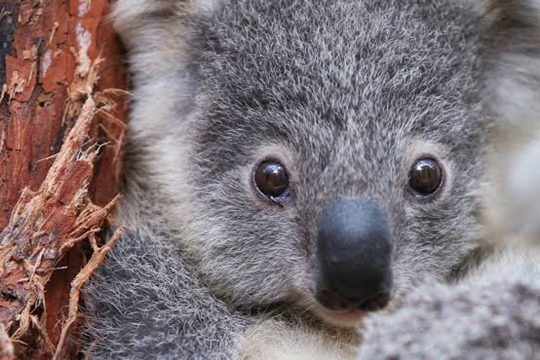

¿Que es un koala?

El koala es el animal australiano emblemático. Suele ser llamado el oso koala, pero en verdad, este animal que trepa por los árboles, es un marsupial, es decir, un mamífero que posee una bolsa para permitir el desarrollo de sus crías.
El pelaje del koala es similar a la lana gruesa de una oveja. Tienen dos pulgares opuestos en sus manos, y tanto sus patas anteriores como posteriores tienen almohadillas y garras rugosas para poder aferrarse a las ramas. En las patas traseras tienen dos dedos fusionados que usan para acicalarse.